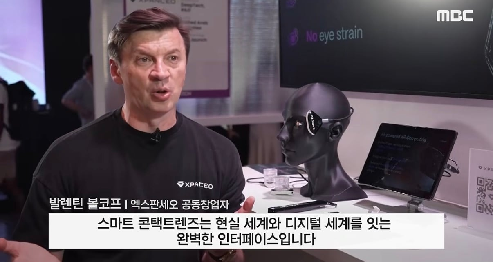
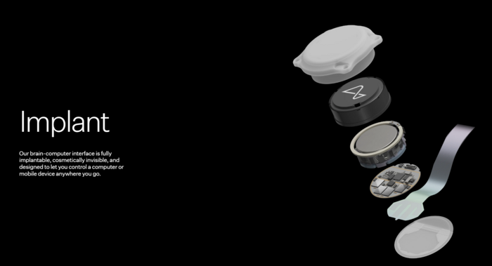
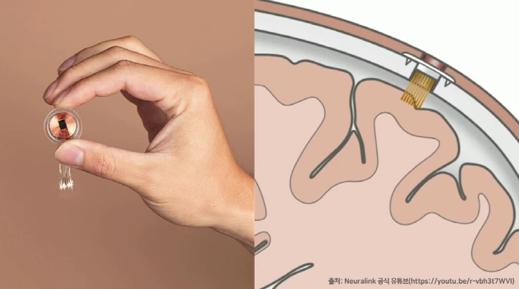
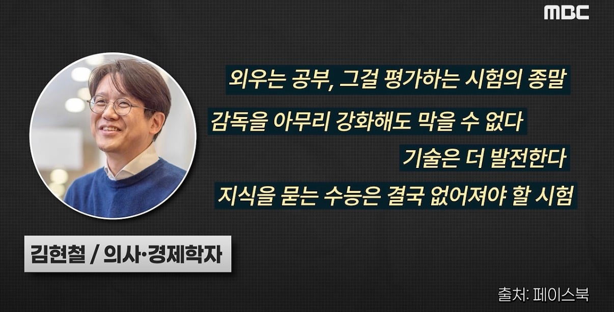

1. 스마트렌즈 기업 Xpanceo의 2027년 초 계획
-
2026년 4월: 초소형 고체 배터리를 콘택트렌즈에 통합하는 개념 검증
-
2026년 7월: JBD와 콘택트렌즈 전용 마이크로 LED 디스플레이 공동 개발 발표
-
2026년 10월: 콘택트렌즈 소재 기업 Contamac과 착용성과 양산 기술 개발 협력
-
2027년 초 목표: 디스플레이·전력·통신·센서를 하나로 통합한 렌즈의 공개 시연 및 시제품 출시
가격: 약 2000달러 예상


2. 일론머스크의 뉴럴링크 2030년 출시 계획
이미 임플란트 2세대 개발이 완료되었으며, 카메라 화면을 머릿속에 직접 띄우는 실험에 성공함.
가격: 양산 시 5000달러 예상

2028년부터 2030년까지 하나 둘씩 임플란트형 AI 스마트기기들이 출시됨.
이쯤되면 기존 암기위주의 인재양산체제인 수능과 전문직 고시 시험 보는 의미가 없어진다는 전문가들의 견해가 나오는 중
댓글
수집 당시 댓글 1개
하위헌스 · 2 일 전